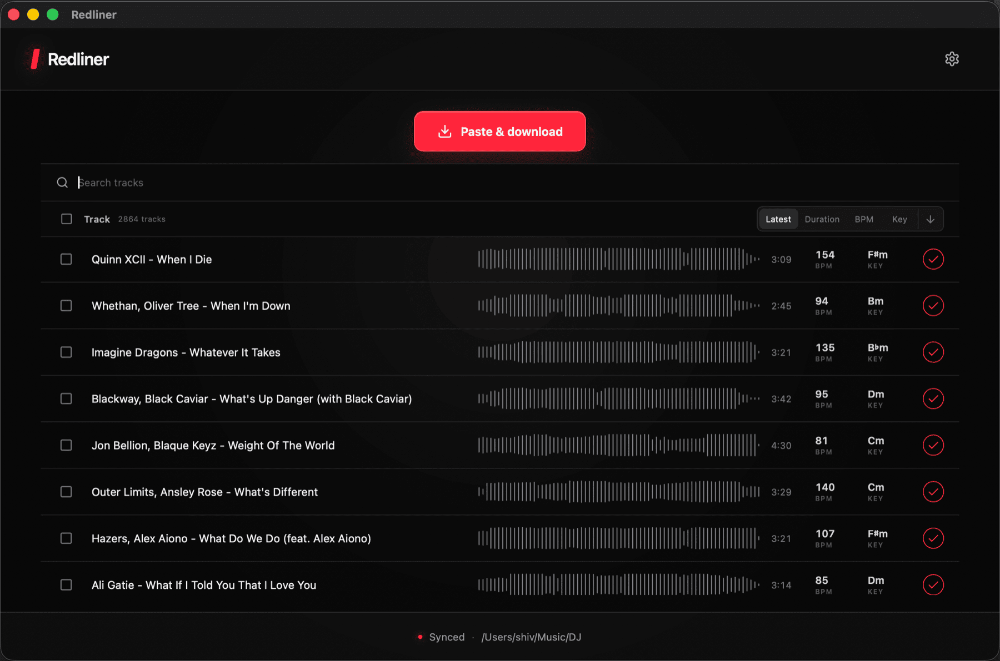

1 /
Drop any link
YouTube, SoundCloud, Spotify, or an audio file.
Redliner pulls online tracks into your DJ folder, analyzes BPM and key, and keeps the crate synced while you play.

From copied link to analyzed track, ready in the crate.
Online pulls can sound rough. Use a proper release when quality matters.
YouTube, SoundCloud, Spotify, or an audio file.
Downloads, converts, analyzes BPM and key, and draws the waveform.
Your selected DJ folder stays synced and ready for DJUCED.
Take requests. Keep the room moving.
macOS · Apple Silicon